← Back to selected work
Game development / Android
Island Destroyer
A mobile cannon game about destroying island targets while avoiding obstacles.

Project overview
Island Destroyer is a hyper casual game, player needs to destroy the targets on the island with your cannon. Be careful the traps and obstacles that block the cannon!
A closer look
Project gallery.
Explore screenshots, footage and project details.
Play video / demo / 01
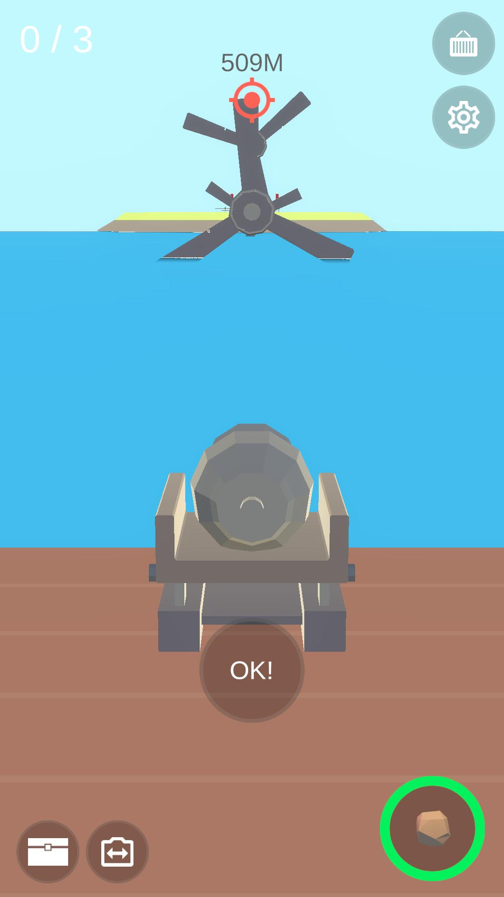
View image / 02
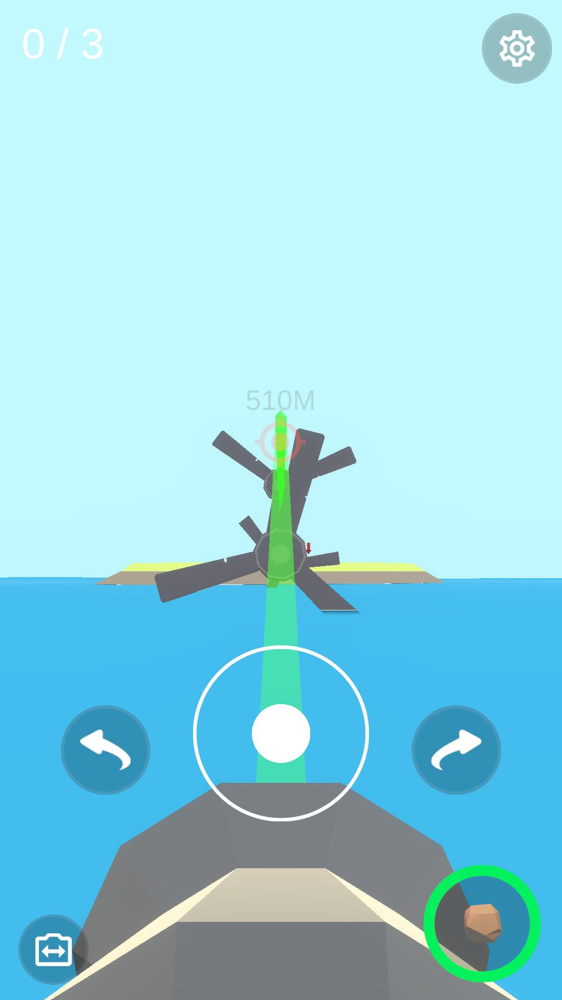
View image / 03
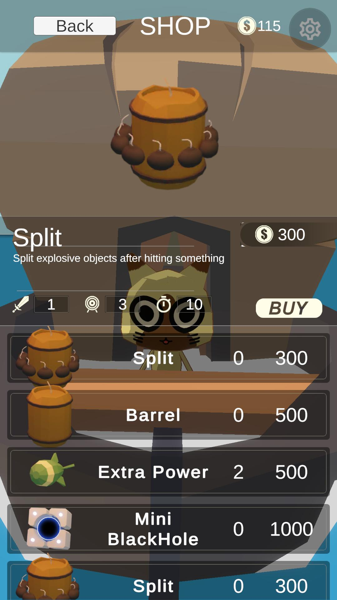
View image / 04
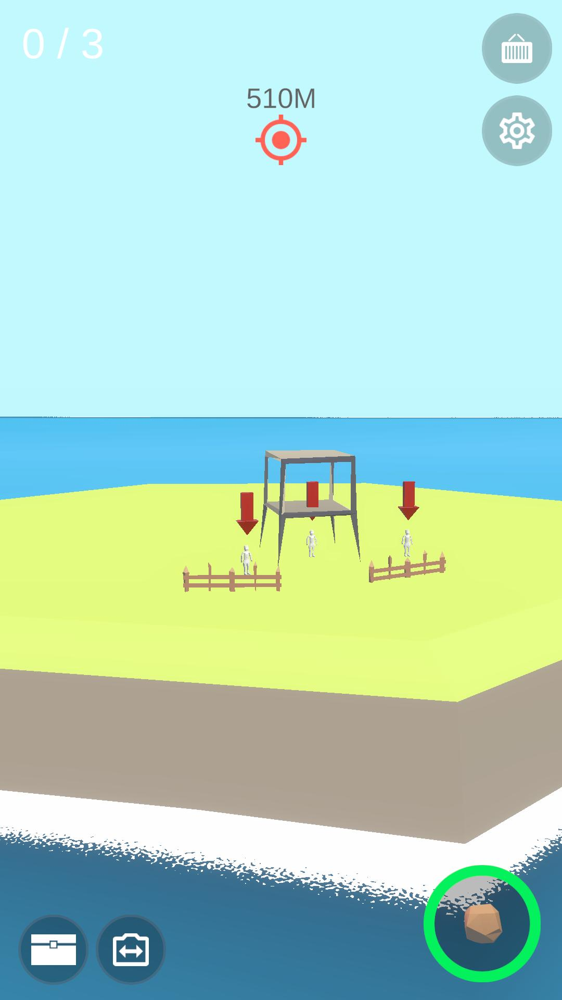
View image / 05
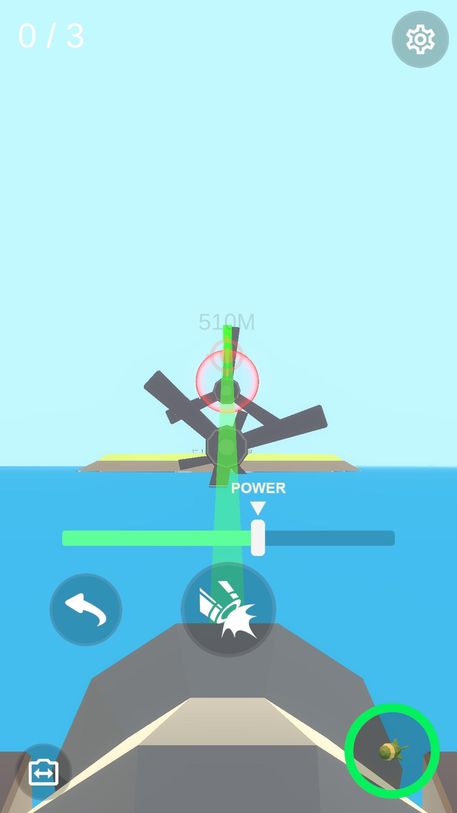
View image / 06
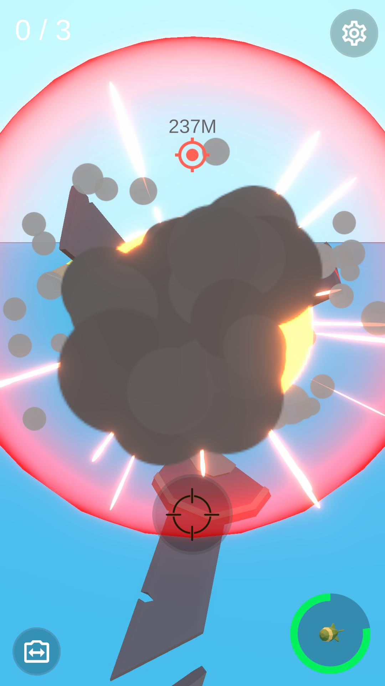
View image / 07
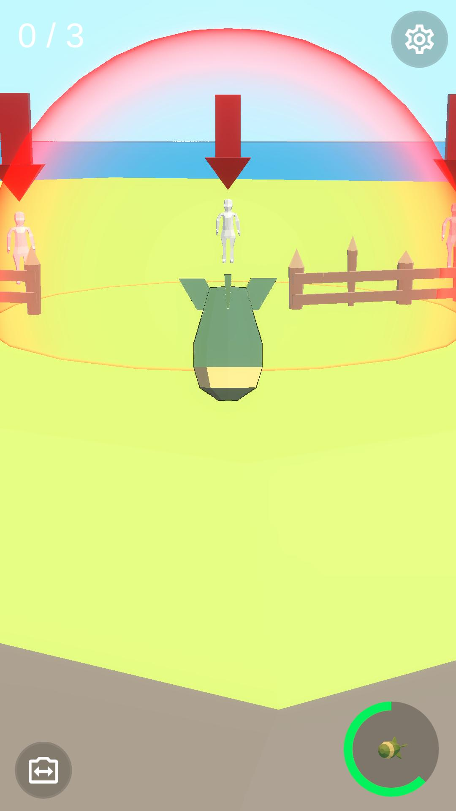
View image / 08
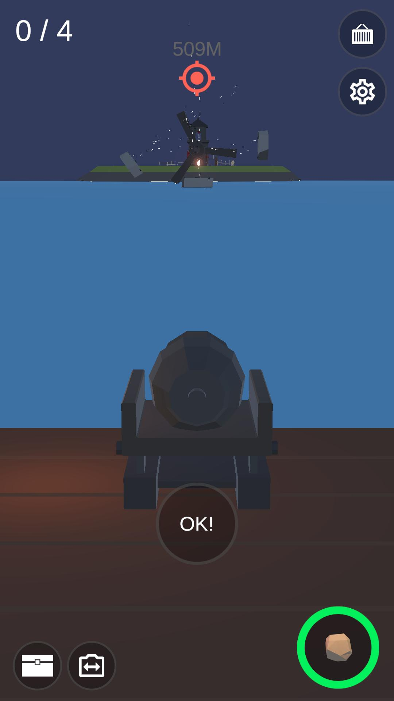
View image / 09
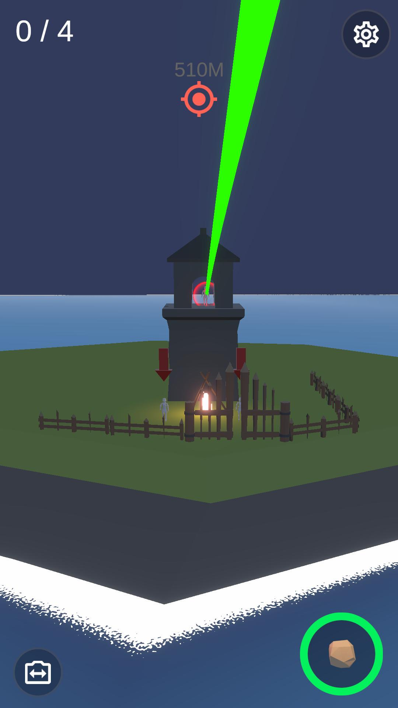
View image / 10
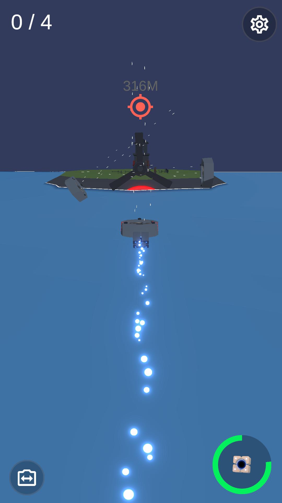
View image / 11
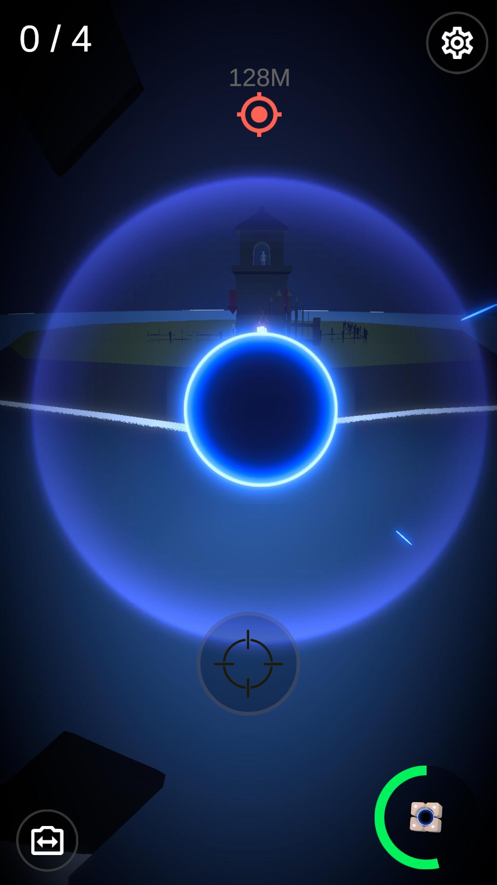
View image / 12
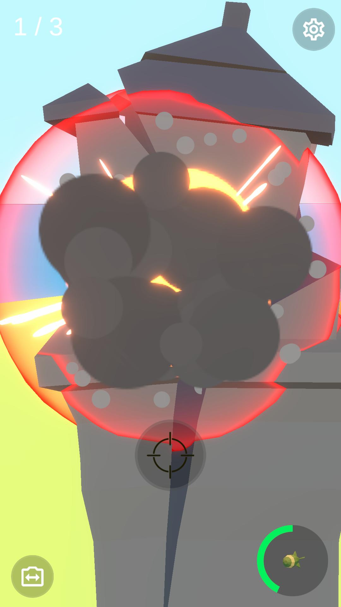
View image / 13
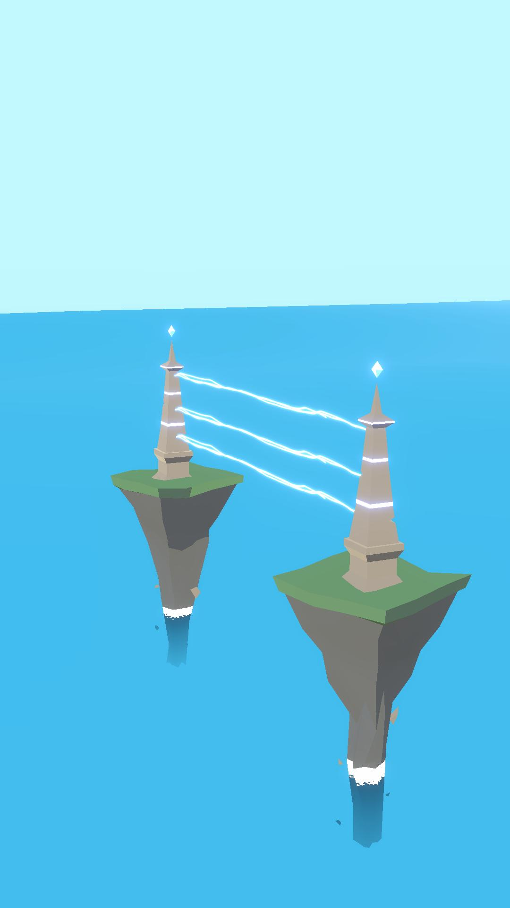
View image / 14
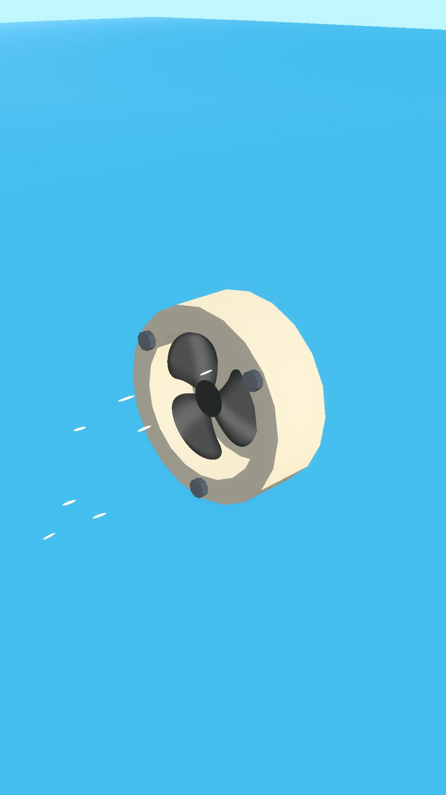
View image / 15
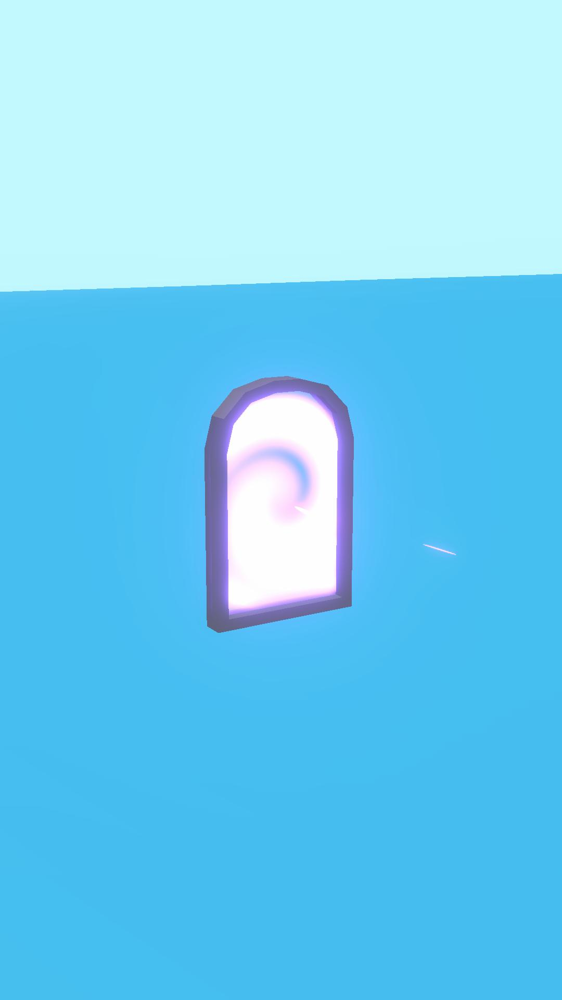
View image / 16
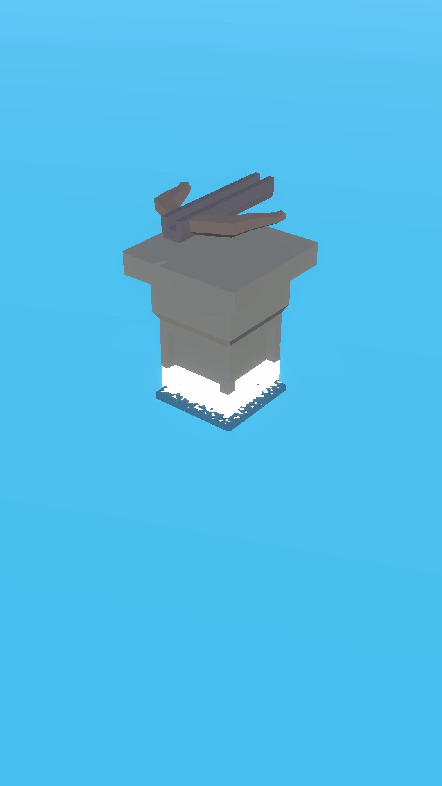
View image / 17